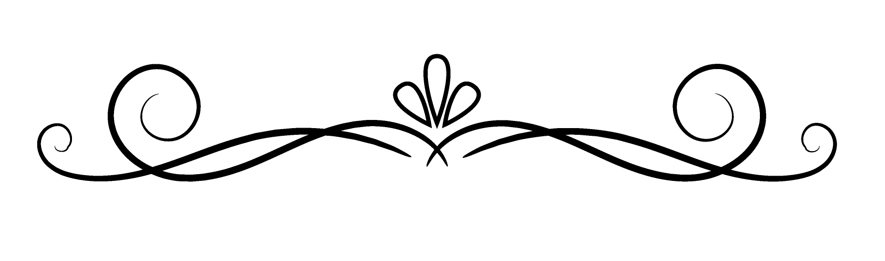

Thanatopraxie
La mort n’est rien, je suis seulement passé de l’autre côté.
Au coeur de la thanatopraxie se trouve l’idée que la mort ne doit pas altérer l’image de la personne décédée.
La thanatopraxie est une pratique délicate et respectueuse visant à préserver la dignité du défunt tout en offrant un dernier hommage apaisant aux proches afin qu’ils puissent faire leur deuil.
Le soin de conservation est une technique qui permet non seulement de prolonger la présentation visuelle du défunt mais aussi de ralentir le processus de dégradation, préservant ainsi l’apparence naturelle du corps.
La thanatopraxie implique souvent des soins esthétiques visant à apaiser les proches en créant une image familière et paisible du défunt.
Cependant il est important de souligner que la thanatopraxie respecte les choix culturels et religieux des familles.

Diplômé depuis 2010, j’ai acquis les compétences nécessaires pour effectuer les soins post-mortem de manière respectueuse et professionnelle.
Je maîtrise les techniques modernes de thanatopraxie, veillant à préserver l’apparence naturelle du corps tout en respectant les normes éthiques et sanitaires.
orsque les familles souhaitent garder leur défunt à domicile, et s’il n’y a pas assez de place pour accueillir une table réfrigérée, je peux proposer l’installation d’une rampe réfrigérante.
Je travaille en étroite collaboration avec les opérateurs funéraires pour garantir une coordination efficace.